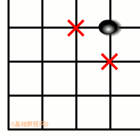
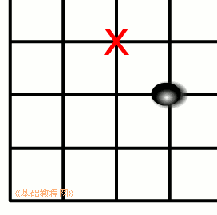
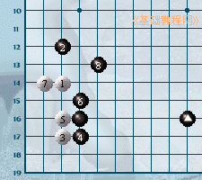
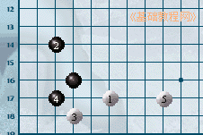
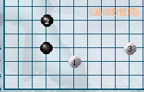
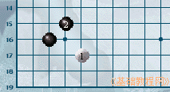
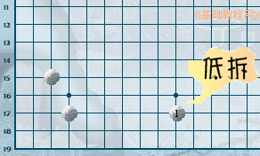
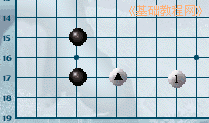
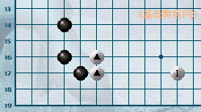
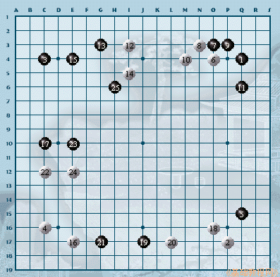

围棋入门基础教程
作者：TeliuTe 来源：基础教程网
下棋开始走的阶段，称为布局，俗语“金角银边草肚皮”，下面我们来看一个练习；
1、占角
1）棋子首先下在角的位置，可以放在星位、和旁边的小目，小目挨着星位有两个；

2）星位在四线上，侧重于对中腹的进军和控制，小目在三线侧重于对角部的守卫；

3）实地和外势是两个基本概念，在角上围住地盘，占据实地，而外势可以获得主动，并在外围获得实地；

4）挂角：角占完后，接着在对方角上棋子小飞的位置落子，对角进行抢夺，并伺机向边上发展，下面是一些挂角的应对方法；
  
2、拆边
1）拆边一般根据已有棋子的外势来决定，大致落在空档的中间位置，这样两面都可以发展；

2）拆二：用于打入到对方的地盘，拆二可以让自己的棋做活不被吃掉；

3）拆三：自己有竖着的两个子，可以拆三，称为“立二拆三”；

4）下面看一个实战的布局：

本节学习了布局的基础知识，如果你成功地完成了练习，请继续学习下一课内容；
本教程由86团学校TeliuTe制作|著作权所有
基础教程网：http://teliute.org/
美丽的校园……
转载和引用本站内容，请保留作者和本站链接。